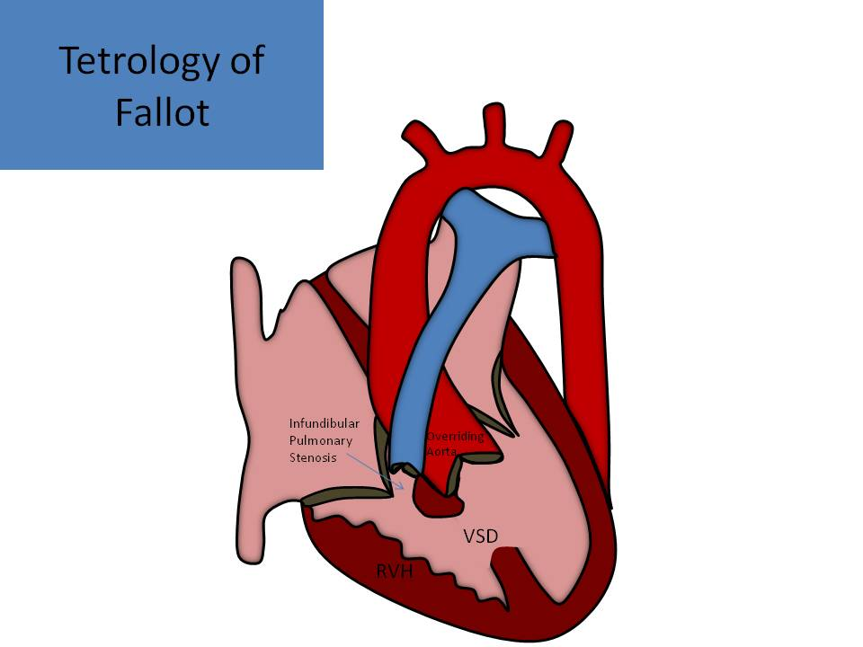
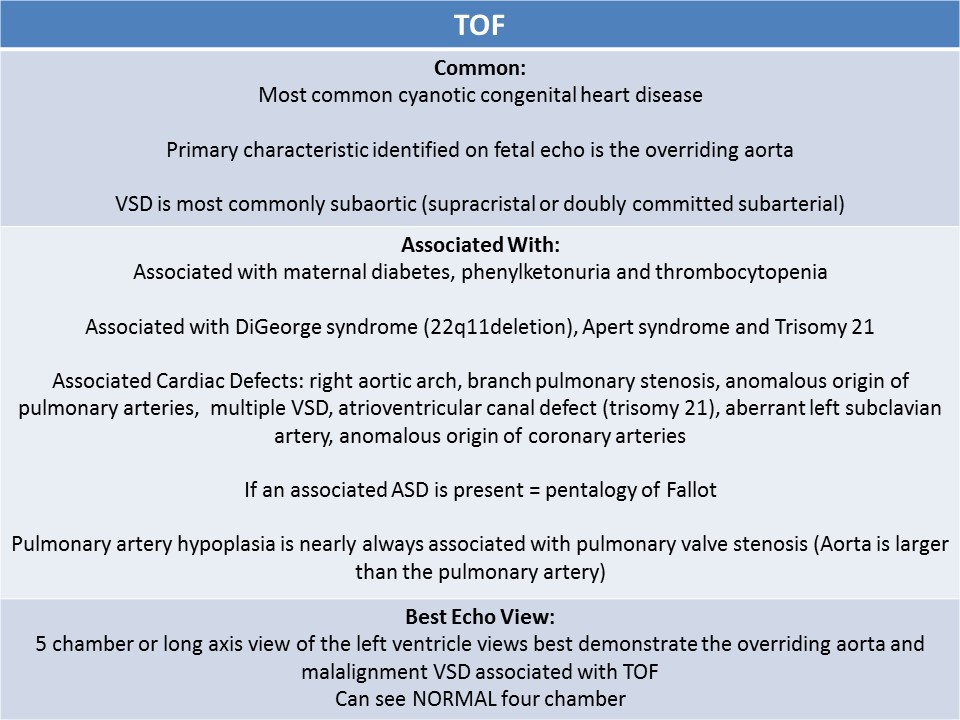
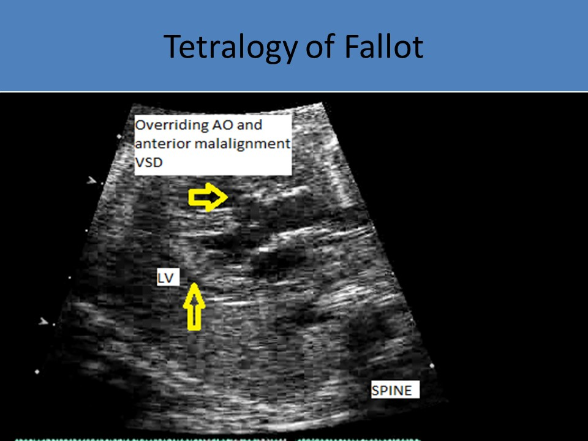
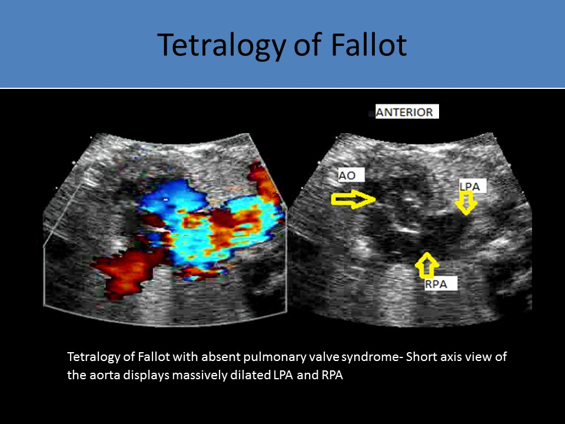
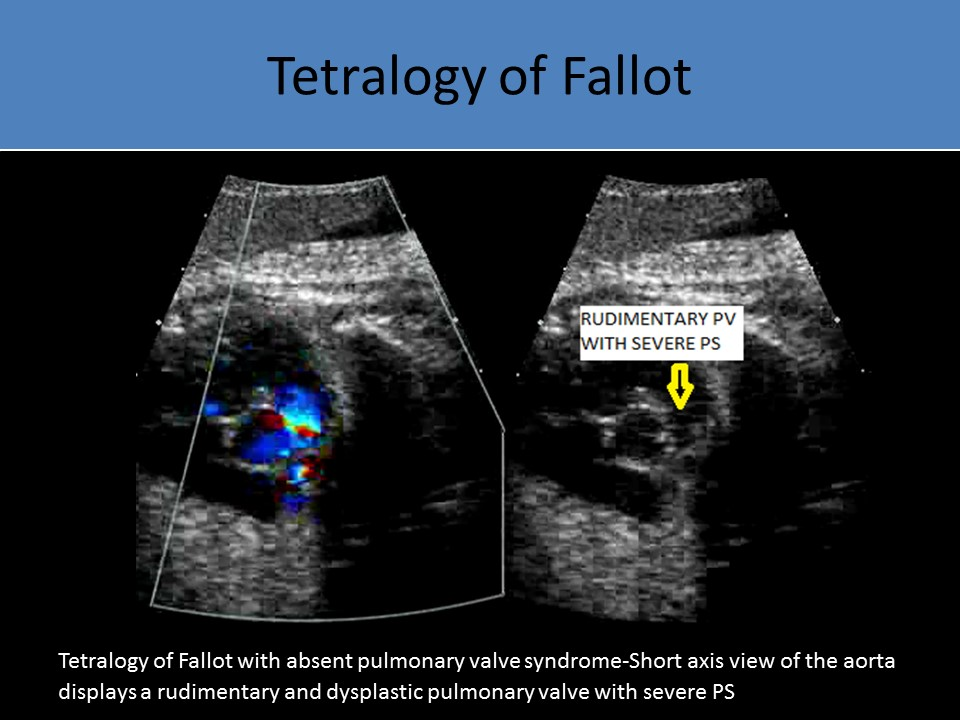

.jpg)
tetralogy of Fallot
- Abnormal conotruncal formation
- Most common cyanotic congenital heart disease
- 8-10% of congenital heart disease
- There are the five T's to help you remember most common types of cyanotic congenital heart disease
- Tetralogy of Fallot
- Transposition of the great arteries
- Tricuspid atresia
- Total anomalous pulmonary venous return
- Truncus arteriosus
- Components:
- Perimembranous VSD
- Overriding aorta
- Pulmonary stenosis or atresia
- Right ventricular hypertrophy
- Strong association with increased nuchal translucency measurement
- Associated with maternal diabetes, phenylketonuria and thrombocytopenia
- Associated with DiGeorge syndrome (22q11deletion), Apert syndrome and Trisomy 21
- Associated Cardiac Lesions:
- ASD - if present, pentalogy of Fallot
- Right aortic arch (30%)
- Persistent left SVC
- Branch pulmonary stenosis
- Anomalous origin of pulmonary arteries
- Multiple VSDs
- Atrioventricular canal defect (Trisomy 21)
- Aberrant left subclavian artery
- Anomalous origin of coronary arteries
 
Types:
Tetralogy of Fallot with Pulmonary Stenosis:
- 80% of TOF cases
- Large anterior malalignment VSD, anterior and rightward deviation of the infundibular septum, overriding aorta, subpulmonary( RVOT) stenosis, hypoplastic and stenotic pulmonic valve, right ventricular hypertrophy
- Primary characteristic identified on fetal echo is the overriding aorta
- >50% of aorta over the left ventricle = TOF
- >50% of the aorta over the right ventricle = DORV
- Normal four chamber view
- Angle cephalad from the apical 4 chamber view to view the aorta
- Rotate the transducer toward the right shoulder from the subcostal 4 chamber view to view the aorta
- 5 chamber or long axis view of the left ventricle views best demonstrate the overriding aorta and malalignment VSD associated with TOF
- Pulmonary artery hypoplasia is nearly always associated with pulmonary valve stenosis or infundibular stenosis
- Pulmonary artery might be normal size or hypoplastic
- Three vessel view is used to allow side by side comparison of the size of the aorta and pulmonary artery
- Antegrade flow seen through the pulmonary artery
- Pulmonary valve velocity is higher than the aortic velocity
- In severe pulmonary stenosis, there is reversed flow in the ductus arteriosus
- Aorta is larger than the pulmonary artery
- Normal heart - pulmonary artery diameter is larger than the aortic orifice diameter
- Mild- moderate stenosis - pulmonary artery diameter is 50-80% of the aortic orifice diameter
- Severe stenosis - pulmonary artery diameter is <50% of the aortic orifice diameter
- Right ventricular hypertrophy does not usually occur until after birth and the foramen ovale and ductus closes
- RVH is NOT identified on fetal echo
- VSD is most commonly subaortic (supracristal or doubly committed subarterial)
- VSD flow bidirectional or right to left due to severity of RVOT obstruction
- Infundibular narrowing is the most common cause of obstruction to flow from the right ventricle (subvalvular pulmonary stenosis)
- Most cases also have an abnormal pulmonary valve
- Ductus arteriosus is normal or smaller

Tetralogy of Fallot- Long axis view displays overriding aorta and anterior malalignment VSD
Tetralogy of Fallot- Four chamber view displays overriding aorta and anterior malalignment VSD
Tetralogy of Fallot with Pulmonary Atresia and VSD:
- Large anterior malalignment VSD
- Overriding aorta
- No connection between RVOT and MPA
- Remnant thread-like MPA
- Branch pulmonary arteries can be supplied by the ductus arteriosus
- 20% of all forms of TOF
- Bilateral ducti (two separate ductus arteriosus vessels -right and left) can exist to supply blood flow to lungs, if no branch pulmonary arteries are detected
- VSD flow: right to left shunt
- Pulmonary valve type: plate-like, well formed infundibulum, MPA and branch arteries
- Pulmonary muscular type: profound RVOT atresia, infundibular, muscular atresia, absent or hypoplastic MPA, MAPCAs can be present
- Seagull wing looking branch pulmonary arteries
- No flow seen in pulmonary artery
- Tortuous ductus arteriosus with retrograde flow
- 20% have chromosomal defects: most commonly associated with 22q11 deletion
- Normal 4 chamber view with normal RV/LV symmetry
- Abnormal 5 chamber view with overriding aorta and malalignment VSD
- Reversal of flow in ductus arteriosus demonstrated in three vessel view
- Most rare form of TOF
- Has classic features of TOF
- Pulmonary atresia causes no antegrade flow from the right ventricle into the pulmonary artery
- Intact ventricular septum offers no pathway to the pulmonary system
- Fetal vessels originating from the splanchnic vascular plexus connect the systemic and pulmonary arterial vasculature to supply pulmonary flow
- MAPCAs (multiple aortopulmonary collateral arteries), 2 to 6 collaterals
- If the ductus is absent or occluded or closed after birth, the collaterals may persist after birth
TOF with multiple aortopulmonary collateral arteries- Multiple blue color Doppler display as multiple collateral arteries around the aortic arch
Tetralogy of Fallot with Absent Pulmonary Valve Syndrome:
- Rare variant of tetralogy of Fallot where the pulmonic valve is rudimentary and thickened, resulting in severe stenosis and insufficiency
- Large anterior malalignment VSD, overriding aorta present
- Massively dilated MPA and branch pulmonary arteries result in significant compression of bronchi
- Markedly dilated right ventricle: tricuspid regurgitation can be present
- Bidirectional flow is seen in the MPA
- C/T ratio is usually over 60%
- Ductus arteriosus usually absent

Tetralogy of Fallot with absent pulmonary valve syndrome- Short axis view of the aorta displays massively dilated LPA and RPA
Tetralogy of Fallot with absent pulmonary valve syndrome-Short axis view of the aorta displays a rudimentary and dysplastic pulmonary valve with severe PS
